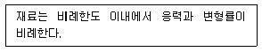

건설재료시험기능사 (2003-10-05 기출문제)
1과목: 건설재료
1. 목재에서 양분을 저장하여 두고 수액의 이동과 전달을 하는 부분은?
- 심재
- 수피
- 형성층
- 변재
(정답률: 60%)

2. 아스팔트의 점도와 가장 밀접한 관계가 있는 것은?
- 비중
- 수분
- 온도
- 압력
(정답률: 68%)
3. 다음중 천연아스팔트에 속하지 않는 것은?
- 레이크 아스팔트
- 스트레이트 아스팔트
- 샌드 아스팔트
- 록 아스팔트
(정답률: 86%)
4. 다음 중 다이나마이트의 주성분은?
- 질산암모니아
- 니트로글리세린
- AN-FO
- 초산
(정답률: 91%)
5. 분말로 된 흑색화약을 실이나 종이로 감아 도료를 사용하여 방수시킨 줄로서 뇌관을 점화시키기 위한 것을 무엇이라 하는가?
- 도화선
- 뇌관
- 도폭선
- 기폭제
(정답률: 92%)
6. 콘크리트용 골재로서 갖추어야 할 성질중 옳지 않은 것은?
- 깨끗하고 유기물, 먼지, 점토 등이 섞여 있지 않을것
- 내구성이 크고 닳음 저항성이 클 것
- 알의 모양이 둥글거나 정육면체에 가깝고 적당한 입도를 가질 것
- 비중이 적고 흡수성이 클 것
(정답률: 60%)
7. 골재의 함수 상태에 있어서 표면건조 포화상태에서 공기 중 건조상태까지 증발된 물의 양을 무엇이라고 하는가?
- 함수량
- 흡수량
- 표면수량
- 유효 흡수량
(정답률: 57%)
8. 다음은 무엇을 설명하는 것인가?

- 탄성계수
- 전단탄성계수
- 포아송의 비 (Poisson's ratio)
- 후크의 법칙(Hook's law)
(정답률: 53%)
9. 시멘트 분말도에 대한 설명중 틀린 것은?
- 분말도는 비표면적으로 나타낸다.
- 분말도가 높으면 수화작용이 빠르다.
- 입자가 가늘수록 분말도가 높다.
- 분말도가 높으면 조기강도가 작다.
(정답률: 83%)
10. 포졸란(pozzolan)을 혼화재로 사용한 콘크리트의 특징을 설명한 것 중 옳지 않은 것은?
- 내구성,수밀성 및 해수에 대한 화학적 저항성이 크다.
- 블리딩(bleeding) 및 재료분리를 작게한다.
- 단위수량을 많이 필요로 하는 경우가 많으며 특히 건조수축이 작다.
- 워커빌리티(workability)를 개선시키고 발열량을 줄인다.
(정답률: 66%)
11. 콘크리트 압축강도 시험용 원주형 공시체의 제작시에 캐핑(capping)작업이란 무엇 때문에 해야 하는가?
- 공시체 표면의 수분침투를 막아 가급적 높은 강도를 얻으려고
- 가급적 두꺼운 층을 갖는 캐핑으로 먼지 등의 오물 침투를 막으려고
- 공시체 표면의 불순물을 제거하여 청결을 유지하려고
- 공시체의 표면을 다듬어 유용한 시험결과를 얻으려고
(정답률: 52%)
12. 석재의 비중은 일반적으로 어떤 비중으로 나타내는가?
- 표건 비중
- 기건 비중
- 진 비중
- 겉보기 비중
(정답률: 66%)
13. 콘크리트 배합에서 단위 잔 골재량이 700kgf/m3, 단위 굵은 골재량이 1300kgf/m3일 때 절대 잔골재율( S/a )은?
- 35%
- 45%
- 55%
- 65%
(정답률: 40%)
14. 수화열이 적고, 건조수축이 작으며 장기강도가 커서 댐, 지하 구조물, 도로 포장용과 서중 콘크리트 공사에 사용되는 시멘트는?
- 보통 포틀랜드 시멘트
- 중용열 포틀랜드 시멘트
- 조강 포틀랜드 시멘트
- 알루미나 시멘트
(정답률: 77%)
15. 콘크리트의 배합 설계에 고려해야 하는 혼화재료는 어느 것인가?
- 플라이 애시
- 고성능 감수제
- 기포제
- AE제
(정답률: 75%)
16. 체가름시험에서 건조기는 다음 중 어느 온도를 유지하여 건조해야 하는가?
- 90± 5℃
- 100± 5℃
- 1⑤± 5℃
- 120± 5℃
(정답률: 72%)
17. 플로우 시험(flow test)의 목적은?
- 콘크리트의 압축강도 측정
- 콘크리트의 공기량 측정
- 콘크리트의 유동성 측정
- 콘크리트의 수밀시험
(정답률: 70%)
18. 콘크리트 블리딩 시험방법은 굵은 골재 최대치수가 얼마 이하인 경우에만 실시 하는가?
- 10mm
- 50mm
- 60mm
- 25mm
(정답률: 72%)
19. 골재의 체가름 시험을 할 때 체를 놓는 순서로 옳은 것은?
- 체눈이 가는 체는 위로,굵은 체는 밑으로 놓는다.
- 체눈이 굵은 체와 가는 체를 섞어 놓는다.
- 체눈이 굵은 체는 위에,가는 체는 밑에 놓는다.
- 체눈의 크기에 관계없이 놓는다.
(정답률: 86%)
20. 콘크리트 슬럼프 시험할때 콘크리트를 처음 넣는 양은 슬럼프 시험용 모울드 용적의 얼마까지 넣는가?
- 3/4
- 1/2
- 1/3
- 1/5
(정답률: 88%)
2과목: 건설재료시험
21. 역청재료의 연소점을 시험할 때 계속해서 매분 5.5± 0.5℃의 속도로 가열하여 시료가 몇 초 동안 연소를 계속 할 때의 최초의 온도를 말하는가?
- 5초
- 10초
- 15초
- 20초
(정답률: 46%)
22. 흙의 비중시험에서 노건조 시료로 시험할 경우에는 110± 5℃에서 항량건조가 될 때까지 적어도 몇시간 건조 시키는가?
- 6시간
- 12시간
- 24시간
- 48시간
(정답률: 33%)
23. 굵은골재의 마모 시험기 중에서 일반적으로 가장 많이 사용하는 시험기는 다음 중 어느 것인가?
- 데발시험기
- 로스앤젤레스시험기
- 흐름시험기
- 긁기경도 시험기
(정답률: 91%)
24. 콘크리트 인장강도 시험시 지름이 10㎝, 길이가 20㎝인 공시체에 하중을 가하여 공시체가 15tonf에서 파괴되었다면 이때의 인장강도는 얼마인가?
- 47.75㎏f/cm2
- 61.42㎏f/cm2
- 75.00㎏f/cm2
- 150.0㎏f/cm2
(정답률: 56%)
25. 아스팔트(Asphalt)의 신도와 관계가 없는 것은?
- 접착성
- 수밀성
- 가요성
- 내마모성
(정답률: 35%)
26. 시멘트 모르타르 압축강도 시험은 공시체를 양생 수조에서 충분히 양생한후 다음중 언제 시험하는가?
- 양생수조에서 꺼낸후 30분후에 한다.
- 양생수조에서 꺼낸후 60분후에 한다.
- 양생수조에서 꺼낸후 공기건조 시킨후 한다.
- 양생수조에서 꺼낸 직후에 한다.
(정답률: 57%)
27. 콘크리트 포장은 평판 재하 시험의 결과를 이용하여 설계하며, 일반적으로 지지력 계수는 지름 30cm의 원형 재하판을 쓰고, 침하량은 얼마일 때의 값을 사용하는가?
- 0.125 cm
- 1.5 cm
- 2.2 cm
- 3.6 cm
(정답률: 45%)
28. 콘크리트의 배합설계에서 재료 계량의 허용오차는 혼화제 용액에서는 몇 % 이하인가?
- 1%
- 2%
- 3%
- 4%
(정답률: 45%)
29. 아스팔트의 침입도 시험에 대한 설명중 틀린 것은?
- 시험시 표준온도는 25℃ 이다.
- 침에 가해지는 추의 무게는 100g 이다.
- 시험기의 고정쇠를 눌러 침이 10초간 시료 속으로 들어가게 한다.
- 침입도는 침이 시료속으로 들어간 깊이를 0.1mm 단위로 나타낸다.
(정답률: 59%)
30. 현장에서 모래 치환법에 의한 흙의 단위무게 시험을 할때의 유의사항중 옳지 않은 것은?
- 측정병의 부피를 구하기 위하여 측정병에 물을 채울때에 기포가 남지 않도록 한다.
- 측정병에 눈금을 표시하여 병과 연결부와의 접속위치를 검정할 때와 같게한다.
- 모래를 부어 넣는 동안 깔대기 속의 모래가 항상 반이상이 되도록 일정한 높이를 유지시켜 준다.
- 병에 모래를 넣을 때에 병을 흔들어서 가득 담을 수있도록 한다.
(정답률: 78%)
31. 액성한계가 42.8% 이고 소성한계는 32.2%일 때 소성지수를 구하면?
- 10.6
- 12.8
- 21.2
- 42.4
(정답률: 90%)
32. 콘크리트를 쉽게 거푸집에 다져 넣을 수 있고 또, 거푸집을 떼어내면 천천히 모양이 변하기는 하지만 모양이 허물어지거나 재료가 분리되지 않는 것은 굳지않은 콘크리트의 어떤 성질을 나타낸 것인가?
- 반죽질기(Consistency)
- 워커빌리티(Workability)
- 성형성(Plasticity)
- 피니셔빌리티(Finishability)
(정답률: 78%)
33. 흙의 비중을 측정하고자 한다. 100mL보다 큰 비중병을 사용할 경우 1회 측정에 필요한 시료는 최소 몇 g 인가? (단, 노 건조 시료를 기준으로 한다.)
- 10g
- 15g
- 20g
- 25g
(정답률: 43%)
34. 국수모양의 흙이 지름 몇 mm에서 부서질 때를 소성한계라 하는가?
- 1mm
- 2mm
- 3mm
- 4mm
(정답률: 85%)
35. 시멘트 비중시험에 필요한 기구는?
- 하버드 비중병
- 르 샤틀리에 비중병
- 플라스크
- 비카장치
(정답률: 85%)
36. 비카침에 의한 시멘트의 응결시간 측정에서 지름 1mm의 표준침이 몇 mm 들어갔을 때의 시간을 초결시간으로 하는가?
- 10
- 25
- 15
- 20
(정답률: 25%)
37. 모래의 유기 불순물 시험에서 시료와 수산화나트륨 용액을 넣고 병마개를 닫고 잘 흔든 다음 얼마동안 가만히 놓아둔 후 색도를 비교하는가?
- 1시간
- 12시간
- 24시간
- 48시간
(정답률: 56%)
38. 블리딩 시험에서 처음 60분 동안은 몇 분간격으로 표면에 생긴 블리딩 물을 피펫으로 빨아내는가?
- 1분
- 5분
- 10분
- 30분
(정답률: 74%)
39. 시멘트 비중시험을 할 때 시험과정 및 유의사항에 대한 설명으로 틀린 것은?
- 광유는 휘발성 물질이므로 불에 주의해야 한다.
- 시멘트를 비중병의 목 부분에 묻지 않도록 조심하면서 넣는다.
- 비중병을 알맞게 흔들어 시멘트 내부에 들어 있는 공기를 빼낸다.
- 시험이 끝나면 비중병에 깨끗한 물과 마른 모래를 넣고 잘 흔들어 깨끗이 닦아 놓도록 한다.
(정답률: 60%)
40. 굳지 않은 콘크리트에 대한 시험방법이 아닌 것은?
- 워커빌리티 시험
- 공기량 시험
- 비파괴 시험
- 블리딩 시험
(정답률: 64%)
3과목: 토질
41. 어떤 흙을 일축압축시험을하여 일축압축강도가 1.2kgf/cm2를 얻었다. 이때 시료의 파괴면은 수평에 대해 50° 의 경사가 생겼다. 이 흙의 내부마찰각은?
- 10°
- 20°
- 30°
- 40°
(정답률: 33%)
42. 흙의 비중이 2.65 이고 간극비는 1.0 인 흙의 함수비가 15.0% 일 때 포화도는?
- 39.75%
- 42.73%
- 53.65%
- 62.83%
(정답률: 50%)
43. 비중계 시험에서 사용한 흙의 공기중 건조상태 시료의 무게가 55.64g이고 이때 함수비가 6.42% 일 때 노건조 시료의 무게(Ws)를 구한 값은?
- 50.28 g
- 51.82 g
- 52.28 g
- 54.32 g
(정답률: 45%)
44. 골재의 함수상태에서 골재알의 표면에는 물기가 없고 골재 알속에는 물로 차 있는 상태를 무엇이라 하는가?
- 습윤 상태
- 절대 건조 상태
- 공기 중 건조 상태
- 표면 건조 포화 상태
(정답률: 89%)
45. 강재의 굽힘 시험에서 감아 굽히는 방법으로 굽힘 각도는?
- 90°
- 135°
- 160°
- 180°
(정답률: 38%)
46. 흙의 건조단위무게가 1.5⑤gf/cm3, 비중이 2.63일 때 이 흙의 간극비는 얼마인가?
- 0.548
- 0.760
- 0.748
- 0.854
(정답률: 40%)
47. 입경가적곡선의 기울기가 매우 급한 흙의 일반적인 성질로 적당하지 않은 것은?
- 밀도가 좋다.
- 투수성이 좋다.
- 균등계수가 작다.
- 간극비가 크다.
(정답률: 35%)
48. 작은 자갈 또는 모래와 같이 투수성이 비교적 큰 조립토에 적합한 투수시험은?
- 정수위투수시험
- 변수위투수시험
- 양수에 의한 투수시험
- 현장투수시험
(정답률: 61%)
49. 지반내 연직응력의 상호관계식을 표시한 것으로 옳은 것은? (단, σ =유효응력, σ =전응력, u =간극수압)
- u = σ + σ
- σ =σ ÷ u
- σ = σ - u
- σ = σ × u
(정답률: 47%)
50. 다음 중 흙에 관한 전단시험의 종류가 아닌 것은?
- 베인 시험
- 일축 압축 시험
- 삼축 압축 시험
- CBR 시험
(정답률: 53%)
51. 지표면에 있는 정사각형 하중면 10m× 10m의 기초 위에 10tonf/m2의 등분포 하중이 작용했을 때 지표면으로부터 10m 깊이의 수평면에 있어서의 연직응력은 얼마인가? (단, 2 : 1 분포법을 사용한다.)
- 1.0tonf/m2
- 1.5tonf/m2
- 2.3tonf/m2
- 2.5tonf/m2
(정답률: 37%)
52. 흙속의 온도가 빙점이하로 내려가서 지표면 아래 흙속의 물이 얼어붙어 부풀어 오르는 현상을 동상이라고 한다. 다음 중 동상의 피해가 가장 큰 것 부터 작은 것의 순으로 올바르게 나열한 것은?
- 실트-자갈-모래-점토
- 자갈-모래-실트-점토
- 실트-점토-모래-자갈
- 자갈-실트-모래-점토
(정답률: 64%)
53. 기초의 종류를 구분할 때 근입깊이와 기초의 폭과의 비로 얕은 기초와 깊은 기초로 구분한다. 다음 중 깊은 기초에 해당하지 않는 것은?
- 말뚝기초
- 피어기초
- 우물통(케이슨)기초
- 전면기초(매트기초)
(정답률: 73%)
54. 모래 치환법에 의한 흙의 단위무게시험에서 모래를 사용하는 이유는?
- 구멍에서 파낸 시료 무게를 알기 위하여
- 시료를 파낸 구멍의 부피을 알기 위해서
- 구멍에서 파낸 시료 입경을 알기 위해서
- 구멍에서 파낸 시료의 함수비를 알기 위해서
(정답률: 81%)
55. 현장에서의 암반층이 적절한 깊이 내에 위치할 경우 상부 구조물의 하중을 연약한 지반을 통해 암반으로 전달시키는 기능을 가진 말뚝은?
- 마찰 말뚝
- 다짐 말뚝
- 인장 말뚝
- 선단지지 말뚝
(정답률: 75%)
56. 현장에서 평판을 놓고 그 위에 하중을 걸어 하중 강도와 침하량을 측정함으로써 기초 지반의 지지력을 추정하는 시험은?
- 실내 다짐시험
- 현장 밀도시험
- 평판재하시험
- 실내 CBR
(정답률: 81%)
57. 지름 50㎜ 높이 125㎜인 용기에 현장의 습윤시료를 채취하여 시료의 무게를 측정했더니 446gf이었다. 이때 습윤단위 무게는 얼마인가?
- 1.58 gf/cm3
- 1.82 gf/cm3
- 2.35 gf/cm3
- 2.76 gf/cm3
(정답률: 44%)
58. 흙의 비중 2.5, 함수비30%, 공극비0.92일 때 포화도는 얼마인가?
- 75%
- 82%
- 87%
- 93%
(정답률: 45%)
59. 다음 중 예민비를 결정하는데 사용되는 시험은?
- 압밀시험
- 직접전단시험
- 일축압축시험
- 다짐시험
(정답률: 56%)
60. 흙댐의 유선망도에서 상하류면의 수두차(H)가 6m, 등수두면의 수(Nd)가 10개, 유로의 수(Nf)가 6개일 때 침투수량은 얼마인가? (단, 투수층의 투수계수는 2.0× 10-4 m/s이다)
- 1.2× 10-4m3/s
- 3.6× 10-4m3/s
- 6.0× 10-4m3/s
- 7.2× 10-4m3/s
(정답률: 27%)